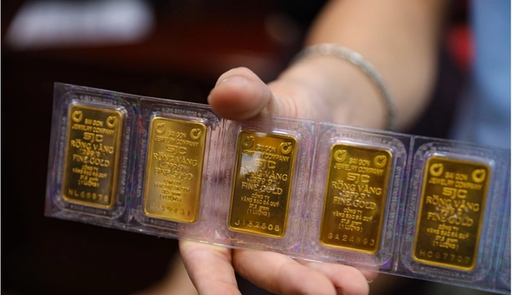

Chuyên gia dự báo giá vàng 4 tháng đầu năm 2026
Xin chào các nhà đầu tư và người quan tâm đến thị trường vàng, bạc tại Việt Nam! Một tuần đầy biến động về giá cả vàng bạc vừa trải qua khiến nhiều nhà đầu tư trong nước đứng ngồi không yên. Trong bài viết này, TrithucWorld sẽ phân tích chi tiết thị trường vàng và bạc, bao gồm dự đoán đợt điều chỉnh giá, nguyên nhân, cơ hội đầu tư, và tầm quan trọng của 4 tháng đầu năm 2026. Nội dung dựa trên dữ liệu lịch sử, diễn biến thị trường quốc tế, và các tín hiệu kinh tế quan trọng.
Để dễ hình dung, tất cả các mức giá vàng và bạc quốc tế sẽ được quy đổi sang tiền Việt Nam (VND) theo tỷ giá hiện tại khoảng 1 USD ≈ 25.000 VND, và vàng bạc quy đổi sang chỉ/lượng:
-
1 lượng vàng = 37,5 gram
-
1 chỉ vàng = 3,75 gram
1. Cảnh Báo Về Biến Động Giá Bạc
Vào ngày 21 tháng 9 vừa qua, nhiều chuyên gia trong lĩnh vực kim loại quý đã đồng loạt đưa ra cảnh báo quan trọng về biến động giá bạc quốc tế, khi thị trường tiến sát đến mốc 50 USD/ounce, tương đương khoảng 1.250.000 VNĐ mỗi chỉ. Theo nhận định của họ, đây là ngưỡng tâm lý mạnh mà tại đó giá bạc có khả năng bị điều chỉnh sau một thời gian tăng nóng. Đáng chú ý, trong báo cáo chuyên sâu công bố ngày 5 tháng 10, cảnh báo này tiếp tục được nhắc lại với dự báo chi tiết hơn: thị trường có thể điều chỉnh giảm tới 19% sau khi chạm ngưỡng 50 USD/ounce, trước khi bước vào một chu kỳ tăng trưởng mới ổn định hơn.
Nguyên nhân của hiện tượng này được cho là xuất phát từ đà tăng quá mạnh của giá bạc trong thời gian ngắn, khiến nhiều nhà đầu tư rơi vào trạng thái “hưng phấn đỉnh điểm”. Khi giá liên tục lập đỉnh mới, tâm lý đám đông thường khiến các nhà đầu tư tin rằng giá sẽ chỉ còn tăng mà không có khả năng giảm, dẫn đến việc bỏ qua những tín hiệu kỹ thuật cảnh báo rủi ro.
Bên cạnh đó, các thông tin về tình trạng khan hiếm nguồn cung bạc vật chất lan truyền rộng rãi trên mạng xã hội cũng góp phần thổi bùng sự lạc quan quá mức. Nhiều kênh đầu tư, diễn đàn và trang tin tài chính chia sẻ rằng các mỏ khai thác bạc toàn cầu đang giảm sản lượng, trong khi nhu cầu cho ngành công nghiệp năng lượng tái tạo (như pin mặt trời, xe điện) lại tăng mạnh. Điều này khiến nhà đầu tư tin rằng giá bạc chỉ có thể đi lên, mà không nhận ra rằng thị trường tài chính luôn có chu kỳ điều chỉnh để cân bằng cung – cầu và loại bỏ tâm lý đầu cơ ngắn hạn.
Chính vì vậy, các chuyên gia nhấn mạnh rằng đợt điều chỉnh giá hiện nay không phải là tín hiệu tiêu cực, mà ngược lại, đó là cơ hội “làm sạch” thị trường. Cụ thể, sự điều chỉnh này giúp loại bỏ lượng vốn đầu cơ ngắn hạn – hay còn gọi là “vốn du lịch” (tourist money). Đây là lượng vốn tham gia vào thị trường chỉ với mục tiêu kiếm lời nhanh, không dựa trên giá trị nội tại của kim loại quý. Khi thị trường điều chỉnh, nhóm nhà đầu tư này thường bán tháo để cắt lỗ, từ đó giúp thị trường quay trở lại trạng thái cân bằng và lành mạnh hơn.
Đợt điều chỉnh giá này, theo góc nhìn của các chuyên gia, chính là giai đoạn thanh lọc cần thiết trước khi bước vào một chu kỳ tăng trưởng bền vững hơn. Họ khẳng định rằng những nhà đầu tư dài hạn, hiểu rõ bản chất của thị trường bạc sẽ coi đây là cơ hội “vàng” để mua vào, bởi về lâu dài, nhu cầu bạc trong các lĩnh vực công nghệ, năng lượng và sản xuất vẫn tăng mạnh.
Nói cách khác, điều chỉnh không phải là sụp đổ, mà là bước lùi cần thiết để chuẩn bị cho một bước tiến dài hơn. Những ai kiên nhẫn và có tầm nhìn chiến lược sẽ là người hưởng lợi lớn khi thị trường hồi phục.
2. Nguyên Nhân Đợt Điều Chỉnh và Tác Động
Đợt điều chỉnh giá vàng và bạc hiện nay xuất phát từ sự kết hợp giữa bán tháo đầu cơ và cơ chế thị trường tự nhiên:
-
Stop-loss cascade (thác bán tự động): Khi giá giảm, các lệnh bán tự động kích hoạt, tạo áp lực bán liên tục, làm giá giảm nhanh.
-
Loại bỏ vốn đầu cơ không ổn định: Các nhà đầu tư dài hạn và tổ chức lớn, bao gồm ngân hàng trung ương, mua vào khi giá giảm, tạo đà tăng trở lại.
Ví dụ lịch sử: tháng 10-11 năm ngoái, vàng giảm 9% trong 2 tuần, nhưng các ngân hàng trung ương và quỹ lớn đã mua vào, tạo đà tăng. Dữ liệu World Gold Council cho thấy các ngân hàng trung ương mua vàng lớn nhất năm 2024 trong giai đoạn điều chỉnh này.
3. Mức Giá Dự Kiến Trong Đợt Điều Chỉnh
Dựa trên diễn biến hiện tại và lịch sử:
-
Vàng quốc tế: có thể giảm về 3.750 USD/ounce (~14.000.000 VND/chỉ), hoặc giảm 9% từ đỉnh, tức dưới 4.000 USD/ounce (~14.500.000 VND/chỉ) trước khi bật tăng.
-
Bạc quốc tế: mức giảm dự kiến về 44 USD/ounce (~1.100.000 VND/chỉ), với khả năng cực đoan 40 USD/ounce (~1.000.000 VND/chỉ).
Lưu ý: giá có thể giảm nhanh, nên nhà đầu tư nên tuân theo kế hoạch mua định kỳ thay vì chờ “giá thấp nhất mới mua”.
Ở Việt Nam, giá vàng SJC hiện tại dao động khoảng 140 triệu – 140,7 triệu VND/lượng, và giá bạc khoảng 14 triệu – 14,7 triệu VND/chỉ. Mức giá dự kiến điều chỉnh ở trên tương đương với các mức sàn tiềm năng cho nhà đầu tư tham khảo.

4. Cơ Hội Đầu Tư Trong Giai Đoạn Điều Chỉnh
Đợt điều chỉnh này là cơ hội cho nhà đầu tư dài hạn:
-
Loại bỏ vốn đầu cơ ngắn hạn: Những nhà đầu tư thực sự quan tâm đến giá trị dài hạn sẽ mua vào khi giá giảm, giúp thị trường ổn định.
-
Cơ hội mua vào giá thấp: Mua vàng bạc vật chất tại mức giá tương đương 14.500.000 – 14.700.000 VND/chỉ vàng và 1.000.000 – 1.100.000 VND/chỉ bạc.
-
Hợp tác với nhà cung cấp uy tín: Mua vàng bạc qua các nhà phân phối như Summit Metals đảm bảo giá tốt và minh bạch.
5. Tầm Quan Trọng của Tháng 4/2026
Dữ liệu kinh tế và lịch sử cho thấy tháng 4 năm 2026 là thời điểm đột phá cho vàng và bạc:
-
Chỉ số CPI Mỹ (giá tiêu dùng) tuần này đạt 3%, thấp hơn dự kiến 3,1%, củng cố kỳ vọng cắt giảm lãi suất 2025-2026.
-
Lãi suất thực (real interest rate) dự kiến xuống 0% hoặc âm, tức người giữ tiền mặt sẽ bị mất giá trị.
Khi lãi suất thực âm, vốn lớn, tổ chức và ngân hàng trung ương sẽ tìm đến vàng và bạc để bảo vệ tài sản. Lịch sử cho thấy, mỗi lần lãi suất thực âm từ 1970-1980, và gần đây từ 2022, vàng và bạc đều tăng mạnh.
6. Dự Báo Giá Vàng và Bạc Đến Tháng 4/2026
Dựa trên phân tích dữ liệu lịch sử và chu kỳ lãi suất:
-
Vàng: Dự kiến vượt 4.500 USD/ounce (~14.700.000 VND/chỉ) vào tháng 4 hoặc 5/2026.
-
Bạc: Dự kiến tăng trở lại 600 USD/ounce (~1.900.000 VND/chỉ), kết hợp với đà tăng của vàng.
Các lần lãi suất thực âm trong lịch sử:
-
1973: Vàng tăng 54% trong 3 tháng đầu 1974
-
1979: Vàng và bạc lập đỉnh blow-off top
-
Đầu 2000: Thị trường bull mới bắt đầu khi lãi suất thực âm
Cơ chế: người nắm giữ tiền mặt mất giá, dòng tiền lớn chuyển vào vàng bạc vật chất để bảo vệ giá trị tài sản.
7. Chiến Lược Đầu Tư Khuyến Nghị
-
Mua định kỳ: Không chờ mức giá thấp nhất, vì đợt giảm có thể nhanh và khó đoán.
-
Đa dạng hóa: Kết hợp mua vàng, bạc vật chất, và xem xét bất động sản từ các nền tảng uy tín.
-
Theo dõi dữ liệu kinh tế: CPI, lãi suất thực, và các quyết định của Federal Reserve sẽ tác động trực tiếp đến giá vàng và bạc.
8. Kết Luận
Đợt điều chỉnh vàng và bạc hiện tại là cơ hội, không phải rủi ro, cho nhà đầu tư dài hạn. Việc tuân thủ kế hoạch mua định kỳ, theo dõi dữ liệu kinh tế, và tận dụng cơ hội từ tháng 4 năm 2026 sẽ giúp nhà đầu tư tối đa hóa lợi nhuận.
Dự báo:
-
Vàng vượt 15.000.000 VND/chỉ
-
Bạc tăng lên 1.900.000 VND/lượng
-
Cơ hội mua vào tốt trong giai đoạn điều chỉnh hiện tại